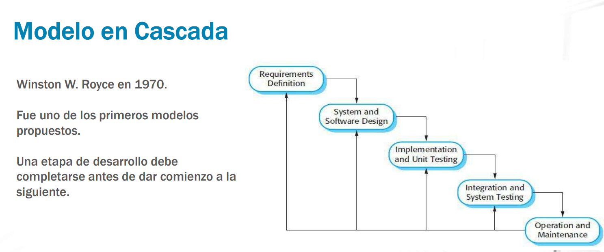

Clases
Clase 1
• La materia trata de metodologías y herramientas de modelado que sirven de base para los
diversos procesos del ciclo de desarrollo de aplicaciones.
• Se busca que el alumno pueda desenvolverse en el marco de un modelo de ciclo de vida de
desarrollo de software, interactuando con otros participantes del proyecto.
• Se busca que el alumno comprenda los principios básicos de la Ingeniería de
requerimientos y reconozca la importancia de su gestión durante el ciclo de vida de un
proyecto de software.
Temática
Presentación de la materia
Metodologías de desarrollo
Requerimientos
Casos de Uso
UML – Diagrama de Clases
Primer Parcial
UML – Diagrama de Clases - Extendido
UML – Diagrama de Secuencia
UML – Diagrama de Estados
Teoría patrones de diseño
Segundo Parcial
paradigma: Periodo de tiempo donde la ciencia evoluciona a partir de teorias aceptadas por el resto, muere cuando un nuevo paradigma nace y un conjunto de cientificos aporta nuevas teorias aceptadas.
Todo es Software: Se empieza a creer software distinto.
¿Que es diseño?
• Es lo que casi todo Técnico quiere hacer!
• Diseñar es el Proceso de desarrollo y creación de un nuevo objeto.
• Es estar con un pie en dos mundos – el de la tecnología y el de los propósitos humanos – que tratan de unificarse.
“Hay dos formas de realizar un diseño. Una es hacerlo tan SIMPLE que sea obvio que no hay deficiencias y la otra es hacerlo tan complicado que no haya deficiencias obvias. El primer método es mucho más difícil” KISS principle Keep It Simple, Stupid”
¿Por que es importante diseñar?
• El diseño es crucial para el éxito del software.
• Agrupa un conjunto de principios, conceptos y prácticas, que llevan al desarrollo de un sistema o producto de alta calidad.
• Es el momento que se establece la calidad, se establece el alcance, el alcance funcional, el formal, el de hardware y el alcance de rendimiento. Tambien influye lo funcional
• Un buen DISEÑO debe ser SIMPLE
Ahora el feedback es más temprano
Clase 2
Introducción
-Modelo en cascada
-Modelo Iterativo o Incremental
-Modelo en Espiral
-Modelo Ágil
El ciclo de vida del desarrollo de software es un modelo aplicado al desarrollo de un PRODUCTO software. Tiene como objetivo encontrar procesos sistemáticos, reproducibles y predecibles que mejoren la productividad y la calidad. Hay varios modelos, cada uno describe un enfoque diferente para distintas actividades que tienen lugar durante todo el proceso.
